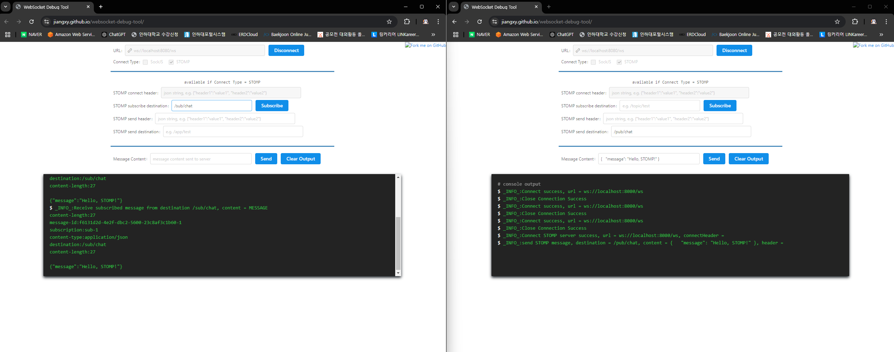
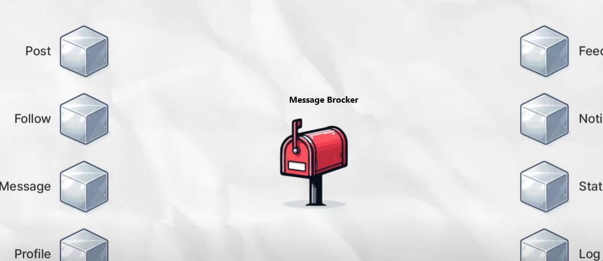

💡 보통 서버에게 정보를 요청할 때 HTTP/HTTPS 통신을 거치게 되는데, HTTP/HTTPS 통신은 클라이언트가 요청했을 때, 서버가 해당하는 정보를 응답해주는 구조이다. 그러나 채팅은 누군가가 대화를 보내면, 내가 서버에 요청을 보내지 않아도 서버가 나한테 정보를 주어야 한다.
이럴 때 사용하는 것이 웹소켓이다. 내가 원하는 정보에 대해 구독을 신청하고, 토픽에 대한 메세지를 발행하면 해당 토픽을 구독하고 있는 모든 사용자에게 보내주는 방식이다.
1. 요구사항 정의
- 사용자가 첫 문의를 하는 동시에 참여가 된다.
- 한 유저는 하나의 채팅방 (하나의 문의방)을 만들 수 있다. (1:1)
- 관리자는 여러 사용자의 채팅방을 수용할 수 있다. (1:N)
- 채팅 메세지는 영구 저장되다가 사용자가 문의 종료를 할 경우 해당 채팅방이 없어져야 한다. (관리자 입장에서는 답변 완료)
2. 기술 선택
- 언어 및 프레임워크
- Java & Spring Boot
- 통신방법 - WebSocket vs Polling
- 채팅 서비스에 메세지 처리 방법에 대해 WebSocket과 Polling 방식을 검토할 수 있다.
- 실시간성이 중요하고, 서버 부하가 덜한 WebSocket을 선택하게 되었다.
| 항목 | WebSocket | Polling |
| 기본 개념 | 클라이언트와 서버 간 양방향 실시간 연결을 유지하며 데이터를 주고 받음 | 클라이언트가 정기적으로 서버에 요청하여 데이터를 가져옴 |
| 실시간성 | 좋음(데이터가 즉시 전달됨) | 요청 간격에 따라 지연 발생 가능 (짧을수록 실시간성이 방향되지만 서버 부하 증가) |
| 효율성 | 연결이 유지되는 동안 데이터 전송만 발생 (네트워크 트래픽 최소화) | 정기적인 요청으로 불필요한 네트워크 트래픽 발생 |
| 서버 부하 | 연결 유지에 약간의 리소스 소모 (사용자 수가 많아질 경우 수평 확장이 필요) | 많은 요청 처리로 서버 부하 증가 (요청 간격이 짧을수록 리소스 증가) |
| 구현 복잡성 | 복잡 | 간단 |
| 확장성 | Redis Pub/Sub 등을 사용하여 다중 서버 환경에서도 안정적 연결 지원 가능 | 확장 시 많은 서버 자원이 필요하며 성능 저하 가능 |
| 1:1 채팅에 적합 여부 | 매우 적합 (빠른 메시지 전달 및 실시간 경험 제공) | 적합하지 않음 (지연 시간 문제 및 네트워크 비용 증가) |
| 1:N 채팅에 적합 여부 | 적합 (Redis Pub/Sub 등과 결합하면 효율적으로 관리 가능) | 적합하지 않음 (다수의 사용자 요청 처리 시 서버 부하가 큼) |
| 주요 사용 사례 | 실시간 채팅, 알림, 게임, 주식 차트 등 | 간단한 비실시간 데이터 갱신 (예: 상태 체크, 로그 업데이트) |
- 메세지 브로커
- Publisher(송신자)로부터 전달받은 메시지를 Subscriber(수신자)로 전달해주는 중간 역할이며 응용 소프트웨어 간에 메시지를 교환할 수 있게 한다.
- 이 때 메시지가 적재되는 공간을 Message Queue(메세지 큐)라고 하며 메시지의 그룹을 Topic(토픽)이라고 한다.
- Publisher(송신자)로부터 전달받은 메시지를 Subscriber(수신자)로 전달해주는 중간 역할이며 응용 소프트웨어 간에 메시지를 교환할 수 있게 한다.
| 항목 | Redis Pub/Sub | RabbitMQ | Apache Kafka |
|---|---|---|---|
| 기본 개념 | 인메모리 기반 메시지 발행/구독(pub/sub) | 메시지 큐 기반의 브로커 (AMQP 프로토콜 지원) | 분산 메시지 스트리밍 플랫폼 |
| 성능 | 빠른 처리 속도 (인메모리 구조) | 중간 속도 (메시지 신뢰성을 위한 추가 처리) | 초당 수백만 메시지 처리 가능 |
| 확장성 | 단일 노드에서 성능 우수, Redis Cluster로 수평 확장 가능 | 제한적 확장성 (클러스터링이 복잡) | 분산 환경에서 수평 확장성과 고성능 제공 |
| 내구성 | 메시지 내구성 보장 없음 (단순 전달) | 메시지 내구성 보장 (디스크에 저장 가능) | 메시지 내구성 보장 (디스크에 로그 형태로 저장) |
| 복잡성 | 구현 간단 (Spring Data Redis 지원) | RabbitMQ 클라이언트 및 설정 필요 | 설정 및 운영 복잡 (ZooKeeper와 함께 사용) |
| 사용 사례 | - 실시간 데이터 처리 - 캐싱 및 세션 관리 - 채팅 시스템 | - 금융 거래- - 주문 관리 시스템 - 신뢰가 중요한 메시지 | - 로그 수집 - 실시간 스트리밍 - 대규모 분산 시스템 |
| Spring Boot 통합성 | Spring Data Redis로 간단히 통합 가능 | Spring AMQP 지원 | Spring Kafka 사용, 약간 복잡 |
| 지연 시간 | 매우 낮음 | 중간 | 중간, 대량 데이터 처리 시 효율적 |
| 운영 및 유지보수 | 쉬움 (간단한 설정과 운영) | 중간 수준 (RabbitMQ 클러스터 관리 필요) | 복잡 (Kafka 클러스터 및 ZooKeeper 관리 필요) |
| 적합한 규모 | 소규모에서 중규모 시스템 | 소규모에서 중규모 시스템 | 대규모 분산 시스템 |


채팅 실습
ObjectMapper
- 주요 기능
- Java 객체 → JSON: Java 객체를 JSON 문자열로 변환할 수 있습니다. 이를 직렬화(Serialization)라고 합니다.
- JSON → Java 객체: JSON 문자열을 Java 객체로 변환할 수 있습니다. 이를 역직렬화(Deserialization)라고 합니다.
- 주요 메서드
writeValueAsString(): Java 객체 → JSON 문자열writeValue(): Java 객체를 JSON 형식으로 파일에 직접 쓸 수 있다.readValue(): JSON 문자열 → Java 객체로 변환
- 변환하기
- JSON 문자열을 객체로 변환하기
String jsonString = "{\"name\":\"John\", \"age\":30}"; ObjectMapper objectMapper = new ObjectMapper(); Person person = objectMapper.readValue(jsonString, Person.class); - 객체를 JSON 문자열로 변환하기
Person person = new Person("John", 30); ObjectMapper objectMapper = new ObjectMapper(); String jsonString = objectMapper.writeValueAsString(person);
- JSON 문자열을 객체로 변환하기
- application.yml
spring: data: redis: host: localhost port: 6379
- Entity
@Getter @NoArgsConstructor @AllArgsConstructor public class ChatMessage { private String sender; private String context; }
- RedisConfig
@Configuration public class RedisConfig { @Bean // redis 서버와 연결을 설정하는 데 필요한 팩토리를 변환하는 메서드 public RedisConnectionFactory redisConnectionFactory() { return new LettuceConnectionFactory(); } @Bean // RedisTemplate : Redis에 데이터를 저장하고 조회하는데 사용되는 스프링의 주요 클래스이다. public RedisTemplate<String, Object> redisTemplate() { RedisTemplate<String, Object> redisTemplate = new RedisTemplate<>(); // RedisTemplate의 인스턴스를 생성 redisTemplate.setConnectionFactory(redisConnectionFactory()); redisTemplate.setKeySerializer(new StringRedisSerializer()); // 값을 직렬화하는 방식을 설정한다. StringRedisSerializer -> // redisTemplate.setValueSerializer(new Jackson2JsonRedisSerializer<>(ChatMessage.class)); redisTemplate.setValueSerializer(new StringRedisSerializer()); // 주석이 해제되면, 값이 ChatMessage 객체로 직렬화/역직렬화되며, Redis에 JSON 형태로 저장 return redisTemplate; } }
- RedisController
@RestController @RequiredArgsConstructor public class RedisController { private final RedisService redisService; @PostMapping("api/redisTest") public String send(@RequestBody ChatMessage chatMessage) throws JsonProcessingException { redisService.setRedisValue(chatMessage); String key = chatMessage.getSender(); ChatMessage chatMessage1 = redisService.getRedisValue(key, ChatMessage.class); return chatMessage1.getContext(); } }
- RedisService
@Service @RequiredArgsConstructor public class RedisService { private final RedisTemplate<String, Object> redisTemplate; // redis private final ObjectMapper objectMapper; //직접 만든 redisTemplate 사용 public void setRedisValue(ChatMessage chatMessage) throws JsonProcessingException { String key = chatMessage.getSender(); System.out.println(key); // ChatMessage 객체를 JSON 문자열로 변환하고, 이를 Redis에 key-value형태로 저장하는 작업 redisTemplate.opsForValue().set(key, objectMapper.writeValueAsString(chatMessage)); // 1. redisTemplate.opsForValue()를 통해 Redis와의 상호작용을 도와주는 ValueOperations 객체를 생성 // 2. set(key, value) 로 데이터 저장 } public <T> T getRedisValue(String key, Class<T> classType) throws JsonProcessingException { String redisValue = (String)redisTemplate.opsForValue().get(key); // aaa return objectMapper.readValue(redisValue, classType); // readValue : JSON 문자열 → Java 객체로 변환 } }
- 로직
- postman 실행 결과
- 실행 결과
- Controller
- ChatMessage
{ "sender" : "aaa", "context": "goRedis" } - RedisPubService
@RestController @RequiredArgsConstructor public class RedisController { private final RedisPubService redisPubService; @PostMapping("api/chat") public String pubSub(@RequestBody ChatMessage chatMessage) { //메시지 보내기 redisPubService.sendMessage(chatMessage); return "success"; } }
- ChatMessage
- RedisPubService - publish ⇒ 채팅을 하는 쪽
@Service @RequiredArgsConstructor public class RedisPubService { private final RedisTemplate<String, Object> redisTemplate; private final ObjectMapper objectMapper; // ObjectMapper 추가 public void sendMessage(ChatMessage chatMessage) { try { // ChatMessage 객체를 JSON 문자열로 변환 String message = objectMapper.writeValueAsString(chatMessage); // topic1 채널로 보내기 redisTemplate.convertAndSend("topic1", message); } catch (JsonProcessingException e) { e.printStackTrace(); // 예외 처리 로직 추가 가능 } } }
- 로직 흐름
채팅 구현
WebSocket
MessageBroker
- ‘동기적’ 이라 함은, 한 쪽이 메세지를 보내는 그 때, 다른 쪽이 이를 수신한다는 의미이다.
- 즉, 한 쪽이 말을 할 때, 다른 쪽은 이를 듣고 있어야 한다는 뜻이다.
- Message Brocker 방식은 이 ‘보내는 쪽’과 ‘받는 쪽’을 서로로부터 자유롭게 만들어준다.
- 마치 택배함 역할을 한다.
- 택배함은 전달받은 데이터를 지정된 시점까지 보관하기 때문에 컨슈머가 바로 찾아가지 않더라도 데이터가 유실될 걱정이 없다.
@Configuration
@EnableWebSocket
@EnableWebSocketMessageBroker // 브로커 활성화 => subscriber에서 원하는 시점에 메세지 처리가 가능하고, scaleout에 용이하다.
@RequiredArgsConstructor
public class WebSocketConfig implements WebSocketMessageBrokerConfigurer {
private final StompHandler stompHandler;
private final StompExceptionHandler stompExceptionHandler;
@Override
public void configureMessageBroker(final MessageBrokerRegistry registry) {
registry.enableSimpleBroker("/sub"); // 내장된 메시지 브로커를 활성화하여 /sub로 시작하는 주소로 발행되는 메시지를 구독하는 클라이언트에게 전달
registry.setApplicationDestinationPrefixes("/pub"); // 클라이언트가 메시지를 발행할 때 사용하는 주소의 접두어를 설정. 클라이언트가 메시지를 서버로 전송할 때 **/pub/**로 시작하는 경로를 사용해야 한다.
}
@Override
public void registerStompEndpoints(final StompEndpointRegistry registry) {
registry
.addEndpoint("/websocket") // 엔드 포인트 : /websocket
.setAllowedOrigins("*") // * 나중에 허용 도메인 추가 *
.withSockJS();
registry.setErrorHandler(stompExceptionHandler);
}
@Override
public boolean configureMessageConverters(List<MessageConverter> messageConverters) {
messageConverters.add(new MappingJackson2MessageConverter());
messageConverters.add(new StringMessageConverter()); // 문자열 기반 메시지 처리
return true;
}
@Override
public void configureClientInboundChannel(ChannelRegistration registration) {
registration.interceptors(stompHandler);
}
}
@Override
public void configureMessageBroker(final MessageBrokerRegistry registry) {
registry.enableSimpleBroker("/sub");
registry.setApplicationDestinationPrefixes("/pub");
}
- 클라이언트가 WebSocket 연결을 통해 메시지를 서버로 전송할 때, 설정한
/pub경로로 전달 - 클라이언트가
/pub로 시작하는 경로에 메시지를 전송하면, 서버는 이를 메시지 브로커에게 위임 - 메시지를 구독한 클라이언트들은 설정된
/sub에 따라 특정 경로(/sub/...)의 메시지를 비동기로 전달
📄 StompHandler & ExceptionHandler
StompHandler
@Slf4j
@Component
@RequiredArgsConstructor
public class StompHandler implements ChannelInterceptor {
// private final JwtTokenProvider jwtTokenProvider; -> JWT 토큰 발급 이후에
private final InquireRoomRepository inquireRoomRepository;
private final UsersRepository usersRepository;
private static final int LIMIT_MEMBER = 2;
@Override
public Message<?> preSend(Message<?> message, MessageChannel channel) {
StompHeaderAccessor accessor = StompHeaderAccessor.wrap(message);
if (StompCommand.CONNECT.equals(accessor.getCommand())) {
handleConnect(accessor);
} else if (StompCommand.SUBSCRIBE.equals(accessor.getCommand())) {
handleSubscribe(accessor);
} else if (StompCommand.DISCONNECT.equals(accessor.getCommand())) {
handleDisconnect(accessor);
}
return message;
}
private void handleConnect(StompHeaderAccessor accessor) {
String userIdHeader = accessor.getFirstNativeHeader("userId");
if (userIdHeader == null) {
throw new IllegalArgumentException(ErrorStatus.SESSION_HEADER_NOT_FOUND.getMessage());
}
Long userId = Long.parseLong(userIdHeader);
if (usersRepository.findUsersById(userId).isEmpty()) {
throw new IllegalArgumentException(ErrorStatus.USER_ID_CANNOT_FOUND.getMessage());
}
}
private void handleSubscribe(StompHeaderAccessor accessor) {
String destination = accessor.getDestination();
if (destination == null || !destination.startsWith("/sub/chat/")) {
throw new IllegalArgumentException(ErrorStatus.INQUIRE_INVALID_PATH.getMessage());
}
// 채팅방 ID 추출
String roomIdStr = destination.replace("/sub/chat/", "");
Long roomId = Long.parseLong(roomIdStr);
// 채팅방 존재 여부 확인
inquireRoomRepository.findById(roomId).orElseThrow(() ->
new IllegalArgumentException(ErrorStatus.INQUIRE_ROOM_NOT_FOUND.getMessage()));
}
private void handleDisconnect(StompHeaderAccessor accessor) {
String sessionId = accessor.getSessionId();
log.info("세션 종료: {}", sessionId);
}
}
1. 역할
StompHandler 클래스는`WebSocket을 통해 클라이언트와 서버 간 메시지 통신에서 STOMP 프로토콜 메시지를 가로채고 처리하기 위한 핸들러 역할을 한다.
즉, 클라이언트가 서버로 발행(예: /pub/chat)하거나 구독 요청(예: /sub/chat/1)을 보낼 때, StompHandler가 이를 가로채어 메시지의 유효성을 검사하거나 추가 로직을 실행한다.
CONNECT처리 (handleConnect)- WebSocket 연결 시 클라이언트가 보낸
userId헤더를 검증한다. userId가 누락되었거나 데이터베이스에 없는 사용자일 경우 예외를 발생시켜 연결을 차단한다.
private void handleConnect(StompHeaderAccessor accessor) { String userIdHeader = accessor.getFirstNativeHeader("userId"); if (userIdHeader == null) { throw new IllegalArgumentException(ErrorStatus.SESSION_HEADER_NOT_FOUND.getMessage()); } Long userId = Long.parseLong(userIdHeader); if (usersRepository.findUsersById(userId).isEmpty()) { throw new IllegalArgumentException(ErrorStatus.USER_ID_CANNOT_FOUND.getMessage()); } }- WebSocket 연결 시 클라이언트가 보낸
SUBSCRIBE처리 (handleSubscribe)- 클라이언트가 특정 채널을 구독하려고 할 때 요청 경로(
destination)를 검증 - 경로가
/sub/chat/{roomId}형식인지 확인하고,roomId를 추출하여 데이터베이스에서 채팅방 존재 여부를 확인 - 채팅방이 존재하지 않을 경우 예외를 발생시켜 구독을 차단
private void handleSubscribe(StompHeaderAccessor accessor) { String destination = accessor.getDestination(); if (destination == null || !destination.startsWith("/sub/chat/")) { throw new IllegalArgumentException(ErrorStatus.INQUIRE_INVALID_PATH.getMessage()); } // 채팅방 ID 추출 String roomIdStr = destination.replace("/sub/chat/", ""); Long roomId = Long.parseLong(roomIdStr); // 채팅방 존재 여부 확인 inquireRoomRepository.findById(roomId).orElseThrow(() -> new IllegalArgumentException(ErrorStatus.INQUIRE_ROOM_NOT_FOUND.getMessage())); }- 클라이언트가 특정 채널을 구독하려고 할 때 요청 경로(
DISCONNECT처리 (handleDisconnect)- 클라이언트의 WebSocket 연결 종료 시 세션 정보를 로그로 기록 → 추후 수정 예정
private void handleDisconnect(StompHeaderAccessor accessor) { String sessionId = accessor.getSessionId(); log.info("세션 종료: {}", sessionId); }
2. 사용 시점
StompHandler는 클라이언트에서 STOMP 명령(CONNECT, SUBSCRIBE, DISCONNECT 등)을 보낼 때 MessageChannel을 통해 서버에 전달되기 전에 실행됩니다.
- 동작 시점:
CONNECT: 클라이언트가 WebSocket 서버에 연결을 시도할 때.SUBSCRIBE: 클라이언트가 특정 채널(예:/sub/chat/1)을 구독하려고 할 때.DISCONNECT: 클라이언트가 WebSocket 연결을 종료할 때.
StompHandler는 각 STOMP 명령을 처리하며, 인증, 유효성 검사, 로깅 등의 역할을 수행합니다.
StompHandlerException
@Slf4j
@Component
@RequiredArgsConstructor
public class StompExceptionHandler extends StompSubProtocolErrorHandler {
@Override
public Message<byte[]> handleClientMessageProcessingError(Message<byte[]> clientMessage, Throwable ex) {
log.error("WebSocket error occurred: {}", ex.getMessage(), ex);
String errorMessage = ex.getMessage();
StompHeaderAccessor accessor = StompHeaderAccessor.create(StompCommand.ERROR);
accessor.setMessage(errorMessage);
accessor.setLeaveMutable(true);
return MessageBuilder.createMessage(errorMessage.getBytes(StandardCharsets.UTF_8), accessor.getMessageHeaders());
}
}1. 역할
StompExceptionHandler 클래스는 WebSocket 통신에서 발생하는 예외를 처리하기 위해 사용하는 STOMP 프로토콜 전용 에러 핸들러
- WebSocketConfig와의 연관성
@Override public void registerStompEndpoints(final StompEndpointRegistry registry) { registry .addEndpoint("/ws") .setAllowedOrigins("*") .withSockJS(); registry.setErrorHandler(stompExceptionHandler); // 예외 핸들러 등록 }setErrorHandler(stompExceptionHandler)- WebSocketConfig에서 stompExceptionHandler를 STOMP 프로토콜의 에러 핸들러로 설정한다.
- 이렇게 설정되면 WebSocket 통신 중 예외가 발생할 때 이 핸들러가 호출된다.
- STOMP 에러 메시지 생성
- 클라이언트가 이해할 수 있는 STOMP
ERROR프레임을 생성 - 에러 메시지를
StompHeaderAccessor에 설정하여 클라이언트로 전달
StompHeaderAccessor accessor = StompHeaderAccessor.create(StompCommand.ERROR); accessor.setMessage(errorMessage); accessor.setLeaveMutable(true); - 클라이언트가 이해할 수 있는 STOMP
- 클라이언트로 에러 메시지 반환
- 생성된 STOMP
ERROR프레임을MessageBuilder를 통해 클라이언트로 전송
return MessageBuilder.createMessage(errorMessage.getBytes(StandardCharsets.UTF_8), accessor.getMessageHeaders()); - 생성된 STOMP
2. 사용 시점
StompExceptionHandler는 클라이언트와의 WebSocket 통신 중 예외 상황이 발생했을 때 자동으로 호출된다. 예외가 발생하는 주요 시점은 다음과 같다.
- 클라이언트가 잘못된 STOMP 메시지를 보낼 때.
- 서버에서 메시지를 처리하는 도중 런타임 예외가 발생할 때.
- 기타 WebSocket 통신 에러가 발생할 때.
InquireController
@Slf4j
@RestController
@RequiredArgsConstructor
public class InquireController {
private final RedisPublishService redisPublishService;
private final ChannelTopic channelTopic;
@MessageMapping("/chat")
public void sendMessage(InquireResponseDTO message) {
// 메시지를 Redis Pub/Sub 채널에 발행
if (message == null || message.getRoomId() == null) {
throw new IllegalArgumentException("메시지 또는 RoomId가 null입니다.");
}
ChannelTopic topic = new ChannelTopic("/sub/chat/" + message.getRoomId());
redisPublishService.publish(topic, message);
log.info("메시지가 Redis Pub/Sub에 발행되었습니다. RoomId={}, Message={}", message.getRoomId(), message);
}
}
- 클라이언트가 WebSocket을 통해 서버로 메시지를 보낸다.
- 이때 경로는
@MessageMapping("/chat")으로 매핑된/pub/chat이다.
- 이때 경로는
- Redis 채널 경로 생성
- 메시지를 구독 중인 클라이언트에게 전달하기 위해 Redis 채널 경로를 동적으로 생성한다.
- 예:
/sub/chat/123(이때 123은 getRoomId()가 된다.)
ChannelTopic topic = new ChannelTopic("/sub/chat/" + message.getRoomId()); - 예:
- 메시지를 구독 중인 클라이언트에게 전달하기 위해 Redis 채널 경로를 동적으로 생성한다.
- Redis에 메시지 발행
RedisPublishService의publish메서드를 호출하여 생성한 채널과 메시지를 Redis Pub/Sub에 발행한다.
RedisPublishServiceImpl
@Service
@RequiredArgsConstructor
public class RedisPublishServiceImpl implements RedisPublishService {
@Override
public void publish(ChannelTopic topic, InquireResponseDTO message) { // message를 특정 채널에 발행
RedisTemplate<String, Object> redisTemplate = new RedisTemplate<>();
if (topic == null || message == null) {
throw new IllegalArgumentException(ErrorStatus.INQUIRE_INVALID_ARGUMENT.getMessage());
}
redisTemplate.convertAndSend(topic.getTopic(), message);
}
}
RedisTemplate<String, Object>를 사용해 메시지를 Redis Pub/Sub 채널로 전송convertAndSend메서드를 호출하여 메시지를 특정 Redis 채널에 (예:/sub/chat/123)에 발행
RedisSubscribeServiceImpl
@Slf4j
@Service
@RequiredArgsConstructor
public class RedisSubscribeServiceImpl implements RedisSubscribeService, MessageListener {
private final ObjectMapper objectMapper;
private final SimpMessageSendingOperations messageSendingOperations;
@Override
public void sendMessage(String publishMessage) {
try {
// JSON 메시지 역직렬화
InquireResponseDTO inquireResponseDTO = objectMapper.readValue(publishMessage, InquireResponseDTO.class);
// WebSocket 경로로 메시지 전송
messageSendingOperations.convertAndSend(
"/sub/chat/" + inquireResponseDTO.getRoomId(),
inquireResponseDTO
);
} catch (JsonProcessingException e) {
throw new RuntimeException("메세지 전송에 실패하였습니다.", e);
}
}
@Override
public void onMessage(Message message, byte[] pattern) {
String publishMessage = new String(message.getBody());
try {
sendMessage(publishMessage);
} catch (RuntimeException e) {
log.error("Redis 메시지 처리 중 에러 발생: {}", e.getMessage(), e);
}
}
}
RedisSubscribeServiceImpl는MessageListener를 구현하여 Redis의 Pub/Sub 메시지를 구독한다.- Redis의 특정 채널에 발행된 메시지를 구독하고 이를 처리하기 위해
onMessage메서드가 호출된다.
onMessage 메서드 동작
Redis에서 메시지가 발행되면, 메시지를 수신하여 다음 작업을 수행한다.
String publishMessage = new String(message.getBody());- Redis로부터 전달받은 메시지는
Message객체의getBody()를 통해 바이트 배열로 전달된다.
sendMessage(publishMessage);sendMessage메서드로 메시지를 넘겨 WebSocket을 통해 클라이언트로 전송
sendMessage 메서드 동작
InquireResponseDTO inquireResponseDTO = objectMapper.readValue(publishMessage, InquireResponseDTO.class);objectMapper.readValue를 통해 JSON 메시지 역직렬화 수행
messageSendingOperations.convertAndSend("/sub/chat/" + inquireResponseDTO.getRoomId(), inquireResponseDTO);SimpMessageSendingOperations를 사용해 메시지를 특정 WebSocket 경로(/sub/chat/{roomId})로 전달
RedisConfig 클래스는 Spring Boot 환경에서 Redis와의 통신을 설정하고 Pub/Sub 메시징을 처리하기 위한 구성(Configuration)을 담당
@Configuration
public class RedisConfig {
private final RedisSubscribeService redisSubscribeService;
public RedisConfig(RedisSubscribeService redisSubscribeService) {
this.redisSubscribeService = redisSubscribeService;
}
// Redis 서버와 애플리케이션 간의 연결을 설정
@Bean
public RedisConnectionFactory redisConnectionFactory() {
return new LettuceConnectionFactory();
}
// Redis에 데이터를 저장하거나 가져올 때 사용하는 RedisTemplate
@Bean
public RedisTemplate<String, Object> redisTemplate(RedisConnectionFactory connectionFactory) {
RedisTemplate<String, Object> template = new RedisTemplate<>();
template.setConnectionFactory(connectionFactory);
// Key 및 Value Serializer 설정
template.setKeySerializer(new StringRedisSerializer());
template.setHashKeySerializer(new StringRedisSerializer());
template.setValueSerializer(new GenericJackson2JsonRedisSerializer());
template.setHashValueSerializer(new GenericJackson2JsonRedisSerializer());
return template;
}
// Redis에서 발행된 메시지를 수신하고, 이를 RedisSubscribeService에 전달
@Bean
public MessageListenerAdapter messageListenerAdapter() {
return new MessageListenerAdapter(redisSubscribeService);
}
@Bean
public RedisMessageListenerContainer container(
RedisConnectionFactory connectionFactory,
MessageListenerAdapter messageListenerAdapter,
ChannelTopic channelTopic) {
// Redis와의 연결을 통해 메시지를 수신
RedisMessageListenerContainer container = new RedisMessageListenerContainer();
// Redis 서버와의 연결을 설정 -> LettuceConnectionFactory와 연결
container.setConnectionFactory(connectionFactory);
// 특정 채널(channelTopic)에 메시지 리스너(messageListenerAdapter)를 추가
container.addMessageListener(messageListenerAdapter, channelTopic);
return container;
}
// Redis Pub/Sub 채널을 지정
@Bean
public ChannelTopic channelTopic() {
return new ChannelTopic("chatroom");
}
}
- 클라이언트 측에서 connectType을 STOMP로 설정해야 @MessageMapping을 탄다.